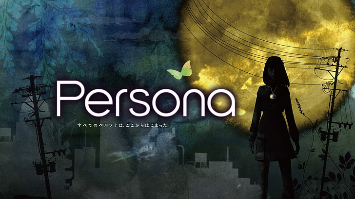
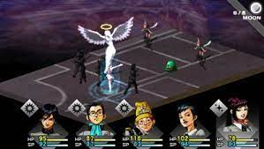
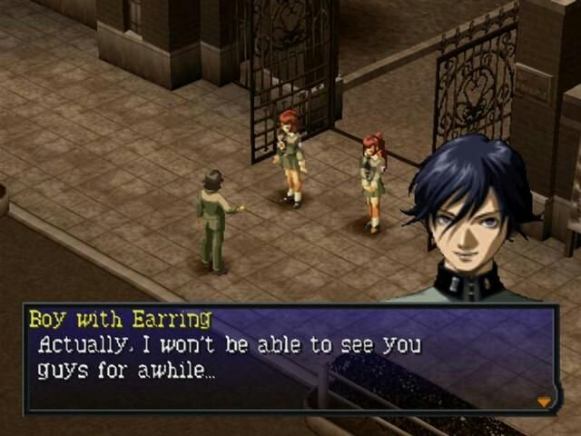
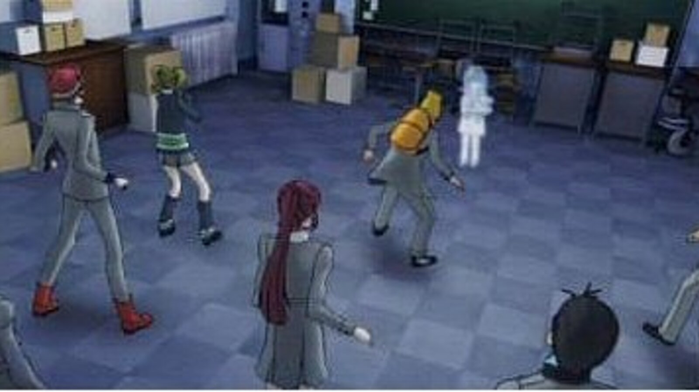

Revelations: Persona, lanzado en Japon como Megami Ibunroku Persona,
es el primer juego de la serie de RPG Persona.
El juego fue originalmente lanzado en la consola PlayStation para Japon y Norte America;
la version japonesa tuvo un port para Windows. Basado en un Japon contemporaneo,
Revelations: Persona esta protagonizado por un grupo de estudiantes de preparatoria que,
armados con armas y enlazados a seres sobrenaturales conocidos como Persona,
se unen para luchar contra los demonios que invaden su ciudad.Un remake de este juego llamado Shin Megami Tensei: Persona y conocido en Japon
simplemente como Persona, fue lanzado para PlayStation Portable en 2009.
En Japon se lanzo el 29 de abril de 2009, en Norte America el 22 de septiembre de 2009
en UMD y el 1 de octubre para la PlayStation Store como juego descargable.
La version incluye una interfaz de usuario redisenada, nuevas cinematicas
multiples niveles de dificultad y una nueva banda sonora.

JUGABILIDAD
A diferencia de los juegos de "Shin Megami Tensei" la trama de Persona no implica
invocadores de demonios. En cambio la "Party" consta de un grupo de adolescentes
proveidos de armas de fuego y armamento de cuerpo a cuerpo.
Cada uno puede invocar un Persona--Una faceta de su personalidad usada en batalla
para luchar contra demonios, funcionando como fuente para los "hechizos magicos",
un elemento tradicional en los juegos de rol.En Revelations: Persona el jugador navega e interactua con el mundo de diferentes
maneras. Al recorrer la ciudad principal el mundo es visto desde una perspectiva
aerea. A diferencia de los siguientes juegos de la saga los edificios y pasillos
se navegan desde una vista en primera persona. Sin embargo, cuando el jugador
entra en una habitacion, la camara cambia a una perspectiva isometrica,
permitiendo al jugador interactuar con los miembros de su party y otros personajes
no jugadores.A pesar de que Persona fue uno de los primeros juegos de la saga
"Megami Tensei" en presentar una perspectiva isometrica, las mazmorras se siguen
navegando en una perspectiva en primera persona. Ambos de estos vestigios se
abandonaron en las siguientes entregas de la saga Persona.
Otra caracteristica de la saga, un icono mostrando la fase lunar, tambien aparece
en Persona. Ademas de mostrar el paso del tiempo en el juego, el estado de la
Luna determina los patrones de actividad de los demonios enemigos y sus estado de
animo si el jugador intenta negociar con uno.

CAMBIOS POR VERSIONES Y REGIONES

Cuando se lanzo por primera vez en Japon en 1996 Megami Ibunroku Persona,
el aspecto del personaje principal mantenia un estilo de moda de aquel momento, presentaba un cabello largo oscuro,
con un arete en la oreja. Aspecto que fue cambiado cuando el juego llego a America como Persona:Revelations en 1997,
la piel la tornaron mas palida, el pelo pelirrojo y mas corto, finalmente el arete fue removido.
Este fue uno de los tantos personajes redisenados, para hacerlo "mas americano"..

RANKINGS
En sus dos resenas importantes, consiguio una calificacion de el 78-80%
lo que lo hace la definicion misma de juego promedio.